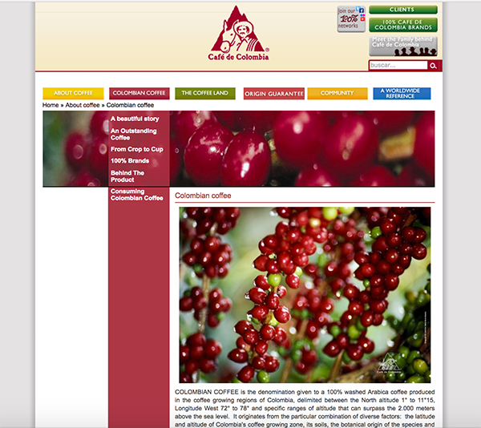
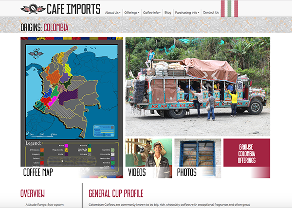

· This comparative research is based on my first topic - coffee ·
Research 1
Cafe de Colombia
This website is intent on introuducing details of coffee from colombia. It contains most of informations I need
for my topic. I think the audience of this website would be someone very interest about the histroy of colombia
coffee and the procedure to produce the famous colombia coffee; however, most of the content of this websites
are text which may cost lots of times for users to read all of them. The website is not responsive, so it might be very
hard to browse it on mobile devices.
(Click images to view the orignal website)

This website has covered more informations about coffee around all over the world than the previous one. It also has
trade platfrom for users to buy coffee from world. Compare to the previous website, this one contains more pictures and
videos which is more interesting for users to browse. It is also a responsive website.
(Click images to view the orignal website)

I think I would combine the adventages of these two websites, such as the specific details introduced in Cafe de Colombia and
the formalization of Cafe Imports to bring more interesting and comprehensive informations about colombia coffee for the users. I
also want to build an phone application to be more accessable on mobile devices